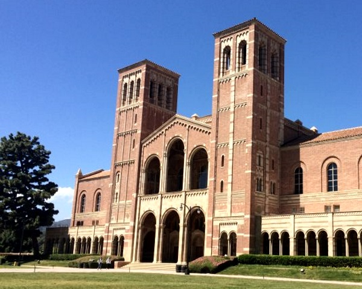

We are interested in building engineering systems that interact intelligently with the environment. Whether for transportation (autonomous vehicles), medicine (medical image analysis and intervention), entertainment (AR/VR) or other applications, this requires "understanding" the surrounding space, including other agents and objects within. Vision plays a key role in this process. Almost half of the primate brain is devoted to processing visual "information". So, if we are to understand how information is acquired, manipulated, and used to solve decision and control tasks, vision is a natural starting point.
But what is visual "information"? How can we acquire an "informative" representation of the physical space around us? What are the fundamental principles that the design of such a representation should abide to? Representation learning is in its infancy, and we are developing the fundamental building block to analyze and design them, as well as for using them for decision and control. We use the insight to develop new methods for perception and action, including building geometric, topological and semantic models of the scene.
Our lab was the first to demonstrate real-time Structure From Motion (SFM) (aka Visual SLAM, Simultaneous Localization and Mapping) in 1999, (demonstrated at CVPR 2000) and Augmented Reality (AR) using a single camera (demonstrated at ICCV 2001 - we called it “real-time virtual object insertion in live video”; the name did not catch). We also participated in the 2005 DARPA Grand Challenge (described here). Later, we gave a complete characterization of the ambiguities in visual-inertial sensor fusion (awarded Best Paper at ICRA 2015), on the tails of the characterization of the ambiguities in SFM (Marr Prize in 1999).
This has been possible thank to the general support of ARO, ONR, AFOSR, NSF, NIH, DARPA, Intel, Microsoft, Sony, Toshiba, Panasonic, Mitsubishi, and in collaboration with multiple research labs around the country, through multi-university research programs.
Alumni of the Vision Lab have moved on to academic positions at UPenn, Cornell, KAUST, INRIA, Oxford, TU Munich, UWV, UT, Bern, etc. to leading positions at industrial research labs at Google, Facebook, Microsoft, Adobe, Amazon, Zoox, Waymo, Deep Mind, Uber, etc. or have started tech companies (ArtFinder, Vathos, RealityCap, Papaya).